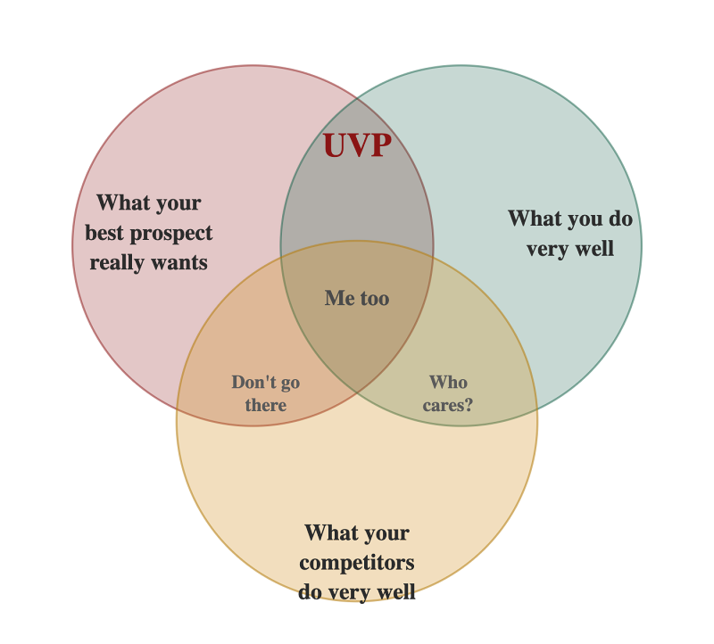
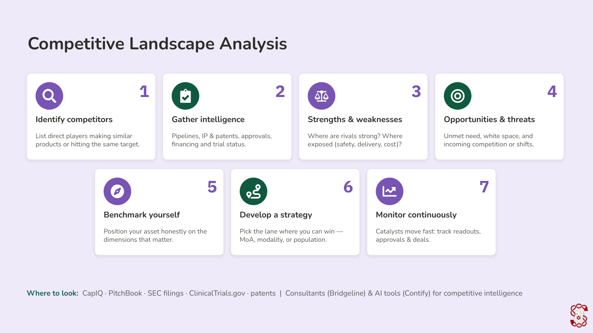
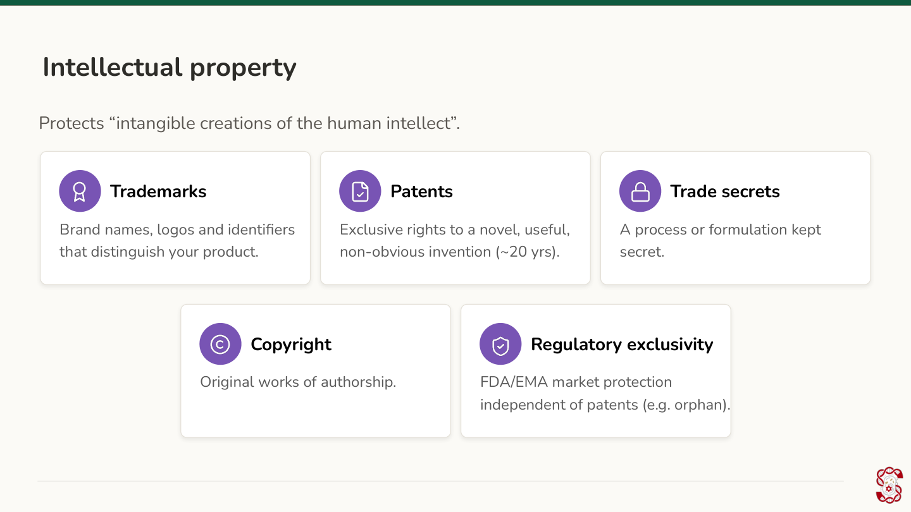
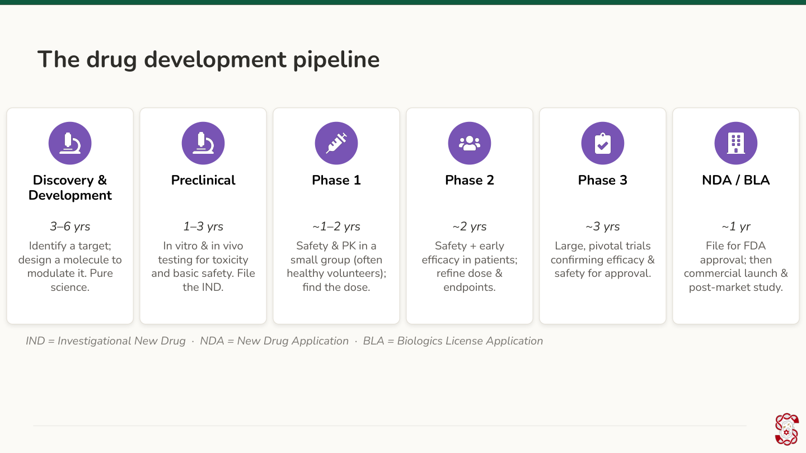
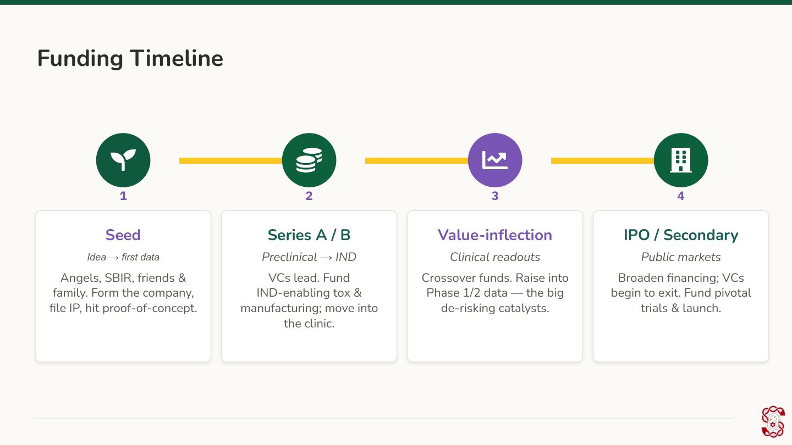
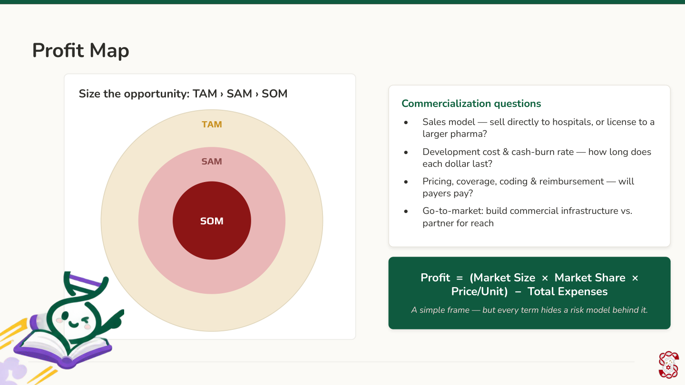

<!doctype html>
<html lang="en">
<head>
<meta charset="UTF-8">
<meta name="viewport" content="width=device-width, initial-scale=1.0">
<title>Module 7: Entrepreneurship in Bioengineering — SynBase</title>
<link rel="stylesheet" href="../css/style.css?v=78">
</head>
<body>

<header class="site-header" id="site-header"></header>
<section class="module-hero" id="module-hero"></section>

<div class="container narrow">
  <div class="page-nav-mount" id="page-nav-mount"></div>
</div>
<main class="container narrow" id="page-viewport"></main>
<div class="container narrow">
  <div class="page-footer-nav" id="page-footer-nav"></div>
</div>

<script src="../js/modules-meta.js?v=16"></script>
<script src="../js/progress.js?v=26"></script>
<script src="../js/quiz-engine.js?v=32"></script>
<script>
const MODULE = {
  id: "module7",
  number: 7,
  title: "Entrepreneurship in Bioengineering",
  lede: "You've learned how to design a synthetic biology solution — now let's talk about what it takes to bring that solution into the world: finding your unique value, protecting your idea, and funding its path from lab to launch.",
  pages: [
    {
      id: "7.1r", type: "read", title: "Welcome to Module 7: From Biodesign to Unique Value",
      html: `
        <p>In earlier modules, you learned how to design a solution to a biological problem — and why it matters to share that solution with the world. But if you want to bring your solution to people as an actual product, there's another question to answer first: what makes your idea worth paying attention to?</p>
        <p>That's what a unique value proposition (UVP) is for. Your UVP is the specific new angle, capability, or insight your solution offers that existing options don't. It doesn't have to be a completely novel idea — it just has to be genuinely yours. Don't be afraid to dig into what makes your particular approach special.</p>
        
        <p>Your UVP sits at the intersection of three things: what your best prospect actually wants, what you personally do very well, and what your competitors are already doing well. Land only in the overlap with a competitor, and you're just "me too." Land somewhere your prospect doesn't care about, and it doesn't matter how well you do it. The UVP is the narrow space where all three overlap.</p>
      `
    },
    {
      id: "7.2r", type: "read", title: "Assessing the Competitive Landscape", part: "Part 1: Finding Your Unique Value",
      html: `
        <p>Before you can say what's unique about your idea, you need to know what else is already out there. That means researching the competitive landscape — the other products, therapies, or companies working on a similar need. This might involve a literature review (like the kind you did in Module 3) or simply looking into pharmaceutical, biotech, and other biological-solution companies working in your space.</p>
        <p>Professionals doing this kind of research tend to follow a similar process: identify who the competitors are, gather information on them, weigh their strengths and weaknesses, spot opportunities and threats, benchmark your idea against theirs, and keep monitoring the landscape as it changes. You don't need specialized market-research databases to do a simplified version of this — a solid internet search and some careful reading will get you most of the way there.</p>
        
      `
    },
    {
      id: "7.3p", type: "practice", title: "Concept Check: Unique Value Proposition", part: "Part 1: Finding Your Unique Value",
      question: {
        prompt: "Which of the following best describes a \"unique value proposition\" (UVP)?",
        options: [
          { text: "A patent that legally protects your invention from competitors", correct: false },
          { text: "The specific new angle or capability your solution offers that existing options don't", correct: true },
          { text: "The total dollar amount investors are willing to give your company", correct: false },
          { text: "A formal document filed with the FDA before starting clinical trials", correct: false }
        ],
        explanation: "A unique value proposition is about what makes your specific approach worth paying attention to — not a legal protection (that's a patent, which we'll get to shortly) and not a funding or regulatory milestone."
      }
    },
    {
      id: "7.4r", type: "read", title: "From Landscape to Pitch", part: "Part 1: Finding Your Unique Value",
      html: `
        <p>Once you have a sense of the current landscape, you're in a much better position to pin down your unique value — and to explain clearly why your idea or project stands out from what's already out there.</p>
        <p>Being able to make that case well is a skill in itself, and it's one you probably already have some practice with, even outside of science.</p>
      `
    },
    {
      id: "7.5f", type: "freeresponse", title: "A Short Detour for Making an Argument", part: "Part 1: Finding Your Unique Value",
      freeResponse: {
        prompt: "Think of a moment in your life when you tried to persuade someone to trust you or agree with your position on something. When you're pitching your product to a potential customer or investor, you'll lean on a lot of the same skills.<br><br>Part 1: Think back to that moment. What did you keep in mind about your audience? About the setting or mode of communication you used? About what you were actually trying to accomplish? Write a short 2-3 sentence reflection on this experience.<br><br>Part 2: How do you think what you just described will help you pitch a product or company idea?"
      }
    },
    {
      id: "7.6r", type: "read", title: "Reaching Your Audience", part: "Part 1: Finding Your Unique Value",
      html: `
        <p>These persuasion skills come in handy whether you're talking to a potential investor or your target customer base. So how do you actually reach that audience? A good place to start is by connecting with patient groups and other communities already discussing the problem you're interested in.</p>
        <p>If you're able to get approval from your Institutional Review Board (more on this in the next module, Module 8: Ethics in Research), conducting customer interviews is a great next step — it gets you direct feedback you can use to make your product more effective and more accessible.</p>
      `
    },
    {
      id: "7.7f", type: "freeresponse", title: "Customer Feedback Activity: Let's Ask Some Questions", part: "Part 1: Finding Your Unique Value",
      freeResponse: {
        prompt: "You might want to talk to your potential customers or target audience for a lot of different reasons — here are just a few.<br><br>Part 1: Choose a customer base. Briefly describe an idea or need space you'd like to develop (this can be one you thought of in Module 3), and the population it's meant to serve. For example: \"I'd like to develop a bionic arm so people who need a solution for everyday functioning can have the best possible experience. My population of interest is people who currently use prosthetic arms, or who need one.\"<br><br>Part 2: For each of the following goals, write 1-2 interview questions you'd ask a potential customer:<br>- You need to understand whether the problem you're addressing is actually important to them.<br>- You have a draft or prototype of your solution and want to improve it using their feedback.<br>- You want feedback from an expert in your field on a prototype or idea.<br>- You want to gather evidence that investors can use to see you have a reliable, interested market."
      }
    },
    {
      id: "7.8r", type: "read", title: "Intellectual Property in Synthetic Biology", part: "Part 2: Protecting Your Idea",
      html: `
        <p>Once you've identified a tangible idea and a customer base, you're building something that's genuinely yours. But there's a competitive landscape out there — so how do you make sure your idea, or your team's idea, stays yours, and that you stay the one driving it forward?</p>
        <p>This is a question of intellectual property (IP): the ideas and innovations that come from your original thinking, and the legal tools that protect them.</p>
      `
    },
    {
      id: "7.9r", type: "read", title: "Five Types of IP", part: "Part 2: Protecting Your Idea",
      html: `
        <p>There are five main types worth knowing:</p>
        <ul>
          <li><strong>Trademark</strong> — protects a brand name, logo, or symbol that identifies your product or company.</li>
          <li><strong>Patent</strong> — protects a new invention (a process, machine, or composition of matter). The inventor gets exclusive rights for about 20 years from filing, in exchange for publicly disclosing how the invention works.</li>
          <li><strong>Trade secret</strong> — protects confidential information, like a formula or process, that gives you a competitive edge — for as long as you keep it secret.</li>
          <li><strong>Copyright</strong> — protects original creative or written work, like code or documentation. Protection starts automatically as soon as you create it.</li>
          <li><strong>Regulatory exclusivity</strong> — a period of time, granted by agencies like the FDA or the EMA (its European counterpart), during which no competing generic version of your product can be approved. This is separate from, and in addition to, any patent you hold.</li>
        </ul>
        
      `
    },
    {
      id: "7.10m", type: "matching", title: "IP Types", part: "Part 2: Protecting Your Idea",
      matching: {
        instructions: "Match the type of intellectual property to its definition.",
        pairs: [
          { left: "Trademark", right: "Protects a brand name, logo, or symbol" },
          { left: "Patent", right: "Protects a new invention for about 20 years, in exchange for public disclosure" },
          { left: "Trade secret", right: "Protects confidential information for as long as it's kept secret" },
          { left: "Copyright", right: "Protects original creative or written work, automatically from creation" },
          { left: "Regulatory exclusivity", right: "A government-granted period blocking generic competitors, separate from any patent" }
        ]
      }
    },
    {
      id: "7.11r", type: "read", title: "With Great Power...", part: "Part 2: Protecting Your Idea",
      html: `
        <p>Having your own intellectual property is exciting. But developing your own research project and holding your own IP also comes with responsibility — you're expected to act in line with your institution's guidelines, and with bioethics and safety standards.</p>
        <p>Or, as Uncle Ben put it in Stan Lee's <em>Amazing Fantasy</em> #15: "With great power comes great responsibility."</p>
      `
    },
    {
      id: "7.12r", type: "read", title: "The Process of Developing a New Therapeutic, Part 1", part: "Part 3: The Development Pipeline",
      html: `
        <p>Stepping out of the comic-book world for a second: what does it actually take to get a biotech product from idea to launch? If you're developing something like a new drug or therapy, there's a fairly standard pipeline to go through, with a general timeline for each stage.</p>
        <p>Discovery and development usually takes 3-6 years — the early research phase where you identify and refine your candidate therapy. Preclinical testing (1-3 years) comes next: you test safety in the lab and in animal models before you're allowed to test in humans. This is also when you file an IND — an Investigational New Drug application, the FDA paperwork that gets you permission to start human trials.</p>
      `
    },
    {
      id: "7.13s", type: "shortanswer", title: "Quick Check: The IND", part: "Part 3: The Development Pipeline",
      shortAnswer: {
        prompt: "What is the name of the FDA application a company files during preclinical testing to get permission to start testing its therapy in human clinical trials?",
        acceptedAnswers: ["IND", "Investigational New Drug application", "Investigational New Drug"],
        explanation: "The IND, or Investigational New Drug application, is the FDA paperwork filed during preclinical testing that authorizes moving from lab and animal testing into human clinical trials."
      }
    },
    {
      id: "7.14r", type: "read", title: "The Process of Developing a New Therapeutic, Part 2", part: "Part 3: The Development Pipeline",
      html: `
        <p>From there, you move through three phases of clinical trials in humans: Phase 1 (about 1-2 years, testing safety in a small group), Phase 2 (about 2 years, testing effectiveness in a larger group), and Phase 3 (about 3 years, confirming effectiveness and monitoring side effects at a larger scale).</p>
        <p>If your therapy makes it through all three, you file an NDA or BLA — a New Drug Application or Biologics License Application, the formal request asking the FDA to approve your product for sale — for final approval and launch, which typically takes about another year.</p>
        
      `
    },
    {
      id: "7.15m", type: "matching", title: "Development Pipeline Stages", part: "Part 3: The Development Pipeline",
      matching: {
        instructions: "Match the stage of the development pipeline to what happens there.",
        pairs: [
          { left: "Discovery & Development", right: "Early research identifying and refining a candidate therapy (3-6 years)" },
          { left: "Preclinical", right: "Lab and animal safety testing; the IND is filed here (1-3 years)" },
          { left: "Phase 1", right: "Small human trial testing safety (~1-2 years)" },
          { left: "Phase 2", right: "Larger human trial testing effectiveness (~2 years)" },
          { left: "Phase 3", right: "Large-scale trial confirming effectiveness and monitoring side effects (~3 years)" },
          { left: "NDA/BLA", right: "Formal FDA filing requesting approval to sell the product (~1 year)" }
        ]
      }
    },
    {
      id: "7.16f", type: "freeresponse", title: "The Development Pipeline: A Case Study", part: "Part 3: The Development Pipeline",
      freeResponse: {
        prompt: "Part 1: Pick a therapeutic that went through this development pipeline — from the list below, or another one you're curious about:<br>- COVID-19 mRNA vaccine<br>- CAR-T cell therapy<br>- CRISPR-based therapies<br>- Chemotherapy<br>- Hormone replacement therapy<br><br>Do some research on how your chosen therapeutic moved through the pipeline. Then, in your own words, describe the key phases the development team went through to get it approved — model it on the stages above, but explain it however makes the most sense to you.<br><br>Once you've worked through this, you'll have a much clearer picture of what it takes to get a synthetic biology solution approved for clinical use."
      }
    },
    {
      id: "7.17r", type: "read", title: "Funding Your Synthetic Biology Solution", part: "Part 4: Funding Your Solution",
      html: `
        <p>Across this course, you've learned a framework for designing, building, testing, and approving a synthetic biology solution. Every step in that framework needs funding from one or more sources — and that means being able to make your case to the people who provide it.</p>
        <p>You may have heard the term "elevator pitch" — a short, persuasive summary of your idea, meant to interest someone in about the time it takes to ride an elevator with them. It's a staple of the startup world, but it's just as useful for a bioengineering project. And it's not just about funding, either — the same skill helps when you're looking for advice, mentorship, or equipment.</p>
      `
    },
    {
      id: "7.18r", type: "read", title: "What to Include in Your Pitch", part: "Part 4: Funding Your Solution",
      html: `
        <p>A few things are worth having ready when you only get a limited amount of time to make your case:</p>
        <ul>
          <li>What is the question you're trying to answer?</li>
          <li>Do you have a clear next step, or a high-level plan with clear go/no-go decision points?</li>
          <li>What's the current need for a solution like the one you're developing?</li>
        </ul>
        <p>Having thought these through ahead of time puts you in a strong position — both to build a support network around your project, and to actually get your solution to the people it's meant to help.</p>
      `
    },
    {
      id: "7.19r", type: "read", title: "The Funding Timeline", part: "Part 4: Funding Your Solution",
      html: `
        <p>Biotech funding tends to follow a fairly predictable timeline, with different types of funders stepping in at different stages:</p>
        <ul>
          <li><strong>Seed stage</strong> — early money from angel investors (individuals investing their own money in early-stage companies) or SBIR grants (Small Business Innovation Research — a U.S. government program that funds early-stage R&D).</li>
          <li><strong>Series A/B</strong> — larger funding rounds, named alphabetically in the order a company raises them, usually from venture capital (VC) firms, once there's enough data to justify a bigger investment. This is often when a company runs its IND-enabling studies — the safety testing needed to support the IND filing you saw earlier.</li>
          <li><strong>Value-inflection stage</strong> — funding from crossover funds (investors who work across both private, pre-IPO companies and public stock markets), typically once there's real Phase 1 or Phase 2 clinical data.</li>
          <li><strong>IPO/secondary stage</strong> — the company raises money from public markets, usually through an Initial Public Offering (IPO), the point at which shares of the company become available for anyone to buy.</li>
        </ul>
        
      `
    },
    {
      id: "7.20o", type: "ordering", title: "Funding Timeline", part: "Part 4: Funding Your Solution",
      ordering: {
        prompt: "Arrange these funding stages in the order a biotech company typically moves through them, from earliest to latest.",
        items: ["Seed", "Series A/B", "Value-inflection", "IPO/Secondary"],
        explanation: "Biotech funding follows a fairly predictable sequence: seed money (angel investors, SBIR grants) supports the earliest research; Series A/B venture capital rounds follow once there's more data, often funding IND-enabling studies; value-inflection funding from crossover funds comes after real Phase 1 or Phase 2 clinical data; and IPO/secondary funding — when company shares become available on public markets — comes last."
      }
    },
    {
      id: "7.21r", type: "read", title: "Sizing Your Market", part: "Part 4: Funding Your Solution",
      html: `
        <p>Once you're pitching investors, they'll want to know how big the opportunity actually is. That's usually broken into three numbers, often shortened to TAM/SAM/SOM:</p>
        <ul>
          <li><strong>TAM (Total Addressable Market)</strong> — the total demand for your type of solution, if you could reach every possible customer.</li>
          <li><strong>SAM (Serviceable Addressable Market)</strong> — the slice of that market your specific product could actually serve, given things like geography or regulation.</li>
          <li><strong>SOM (Serviceable Obtainable Market)</strong> — the slice of the SAM you could realistically capture, given your resources and competition.</li>
        </ul>
        <p>From there, a simplified version of the math looks like: Profit = (Market Size x Market Share x Price per Unit) − Total Expenses. Investors will also want to know your cash-burn rate (how quickly your company is spending its available funding before it runs out), along with your sales model, pricing and reimbursement plan, and go-to-market strategy.</p>
        
      `
    },
    {
      id: "7.22p", type: "practice", title: "Concept Check: TAM/SAM/SOM", part: "Part 4: Funding Your Solution",
      question: {
        prompt: "A company's Serviceable Obtainable Market (SOM) is best described as...",
        options: [
          { text: "The total worldwide demand for a type of product, ignoring any practical limits", correct: false },
          { text: "The realistic slice of the market the company could actually capture, given its resources and competition", correct: true },
          { text: "The portion of the market restricted by geography or regulation, before considering competition", correct: false },
          { text: "The company's total revenue after all expenses are subtracted", correct: false }
        ],
        explanation: "TAM is the total possible demand, SAM narrows that to what your product could realistically serve given constraints like regulation or geography, and SOM narrows it further to what you could realistically capture given your own resources and competitors. Revenue minus expenses is profit, not SOM."
      }
    },
    {
      id: "7.23f", type: "freeresponse", title: "Where Could This Take You?", part: "Part 4: Funding Your Solution",
      freeResponse: {
        prompt: "This module touched on a few different roles that make up the path from lab to market: the scientist-founder pitching a solution, the patent attorney protecting it, the regulatory affairs specialist shepherding it through FDA approval, and the investor deciding whether to fund it — among others.<br><br>Which of these roles (or another one you can think of, related to bioengineering entrepreneurship) sounds most interesting to you, and why? Write a short reflection."
      }
    }
  ]
};

(async () => {
  const user = await bootstrapAuthAndProgress(false);
  if (!user) return;
  renderModulePage(MODULE);
})();
</script>
</body>
</html>
